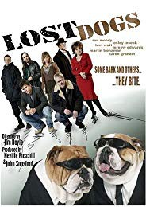

IMDB-Wertung: 5.8 / 10
IMDB-Wertung: 5.8 / 10  Metascore:
Metascore: 
New age travelers kidnap the prized dog of a Bristol Antiques dealer, with dire consequences.
Alternativ: Lost Dogs
 IMDB-Wertung: 5.8 / 10 Metascore:
New age travelers kidnap the prized dog of a Bristol Antiques dealer, with dire consequences.
Jahr: 2005
Dauer: 84 Minuten
FSK: 16
Land: England Studio: Edel Media & EntertainmentTonspuren:
Untertitel: Deutsch,
Auflösung: 1080p (1920x816) Größe: 8611 MB
Regisseur: Jim Doyle
Drehbuch: Kan Keito
Soundtrack: Ken Bolam, Alex Dickson
Darsteller:
 Martin Trenaman als Spook Whitlock
Martin Trenaman als Spook WhitlockDatei: X:\2005(A-F)\Dog Kidnapping (2005, FSK16, 1920x816).mkv seit 19.07.2018
Festplatte: HD 2003-2004-2005(A-F)
 Es gibt insgesamt 49 Filme in der Gruppe '2005(A-F)'
Es gibt insgesamt 49 Filme in der Gruppe '2005(A-F)'